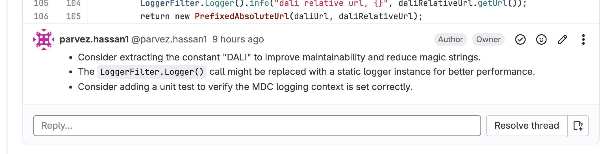

AI Code Review for GitLab¶
Inline AI code review on every GitLab merge request, using your own model and your own keys.
ai-code-review-gitlab-plugin is a small open-source CLI that reads a merge request diff, asks an LLM to review each hunk, and posts the feedback as inline discussion threads on the exact lines that changed.

- Inline comments, on the changed line, not one giant wall of text
- Bring your own model: Claude on AWS Bedrock, the Anthropic API, Gemini, or any OpenAI-compatible / Ollama endpoint
- Your code stays in your cloud: runs inside your own GitLab runners and calls only the provider you configure
- Zero-flag setup in GitLab CI: picks up
CI_MERGE_REQUEST_IID,CI_MERGE_REQUEST_PROJECT_IDandCI_API_V4_URLautomatically - Custom prompts from a local file or S3, so you can enforce your team's own review checklist
- Quiet when there's nothing to say: hunks without significant feedback are rolled into a single summary note
- MIT licensed and free: you only pay your LLM provider
Quick start (60 seconds)¶
- Create a project or group access token with the
apiscope and add it as a masked CI/CD variable calledCODE_REVIEW_GITLAB_TOKEN. - Add your provider key as a masked CI/CD variable, for example
GEMINI_API_KEYorANTHROPIC_API_KEY. - Add this job to
.gitlab-ci.yml:
ai-code-review:
image: node:20
variables:
AI_PROVIDER: gemini # or: anthropic | bedrock | openai
script:
- npx -y @parvez3019/ai-code-review-gitlab-plugin
rules:
- if: $CI_PIPELINE_SOURCE == "merge_request_event"
Open a merge request. Review comments appear on the diff within a minute or two.
Prefer a one-line include?
Use the reusable CI template or the prebuilt Docker image to skip the npm install on every pipeline.
How it works¶
MR pipeline ──► fetch MR diffs (GitLab API)
──► split each file into hunks
──► send hunk + review prompt to your LLM
──► LLM answers with feedback, or "204" (nothing significant)
──► post feedback as an inline discussion on that line
──► post one summary note for the hunks with no feedback
Next steps¶
- Pick a provider and its recommended model
- Customise the review prompt for your team's standards
- See how it compares to GitLab Duo, CodeRabbit and PR-Agent